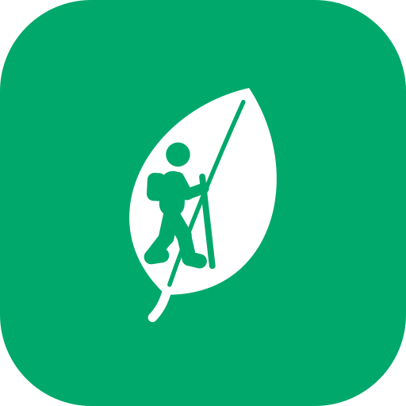

Valia · Guia per al jurat
Prototip funcional del Treball de Recerca «GreenVallès»: turisme actiu i sostenible al Vallès Oriental.
Escanegeu-lo amb la càmera
Com entrar (3 opcions)
1 · Compte de demostració (recomanat)Correu
jurat@greenvalles.cat · contrasenya TR2026. A «Inicia sessió», el botó «Omple-ho per mi» l'escriu sol. Té dades d'exemple: punts, rutes fetes i impacte.2 · Crear un compteNom, correu vàlid i contrasenya de 8 caràcters com a mínim. El compte es desa només en aquest mòbil.
3 · Entrar com a convidatSense dades personals. Les funcions de compte (desar, canviar punts) demanen registrar-se.
No cal descarregar res ni iniciar sessió en cap servei extern. Funciona a Safari (iPhone) i Chrome (Android).
Recorregut de 2 minuts
| 0:00 | Obrir | Animació de càrrega amb l'excursionista del logotip (es pot ometre amb «Omet»). |
| 0:10 | Inicia sessió | «Inicia sessió» → «Omple-ho per mi» → «Inicia sessió». |
| 0:20 | Xat | Escriviu rutes amb tren, CO2 o recompenses. L'assistent respon amb rutes reals de la comarca. |
| 0:40 | Explorar | Filtre ràpid o «Filtres» (amb nens, sense cotxe, durada…). Obriu una fitxa i el mapa. |
| 1:00 | Ruta guiada | «Iniciar ruta» → «Fer check-in» (+20 punts) → pausa → «Finalitzar» → resum amb el CO₂ estalviat → «Desar la ruta». |
| 1:30 | Recompenses | Trieu «Recàrrega de transport públic» → «Canviar»: el saldo baixa i apareix el codi a «Les meves recompenses». |
| 1:50 | Perfil | Estadístiques i impacte de les rutes desades. «Tancar la sessió» al final del perfil. |
Què és real i què és d'exemple
- Real: els 12 llocs i municipis del Vallès Oriental, el registre amb validació, l'inici de sessió, la persistència de dades i el canvi de punts.
- Exemple durades, distàncies, punts, recompenses, xifres de comunitat i factors de CO₂ (pendents de fonts oficials).
- Simulat l'assistent respon per paraules clau. La IA real és la fase següent.
- Les imatges dels llocs són provisionals.
Bo de saber
- Els comptes es desen al mateix navegador (localStorage). No hi ha servidor: és una demostració, no un sistema segur.
- Instal·lar-la (opcional): iPhone → Compartir → «Afegeix a la pantalla d'inici». Android → menú ⋮ → «Instal·la l'aplicació».
- Un cop oberta, es pot fer servir sense connexió (el xat avisa que cal connexió, com passarà amb la IA real).
- Per començar de zero: Perfil → Ajustos → Privacitat → «Esborrar el compte».